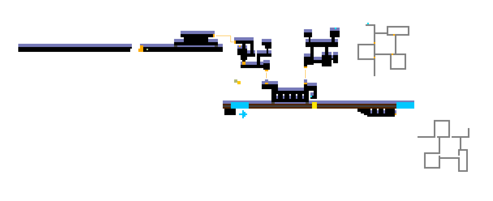
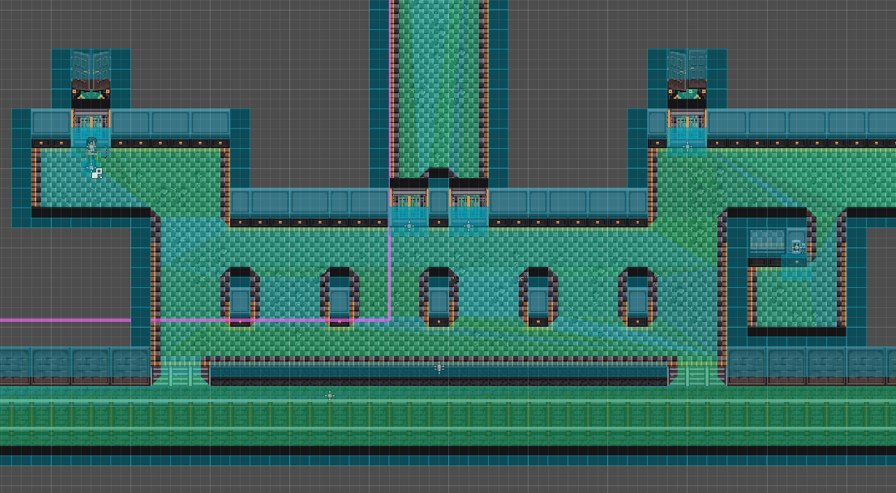

The Railway Level
As of early August, I essentially completed Commercial_02, the level that I had been working on for the past 6-7 months. While that does sound like a lot of time for just one level, I had been dealing with personal responsibilities such as finishing up school and job hunting, and only had time to work on Oneirality on and off in my free time. But with those out of the way (for the most part for the latter, at least), I’m now able to continue onto the next level.
For this new level, dubbed Railway_01 in the files, I chose to go about things differently. For one, I would design the main focus of the level first before making all the other sections/areas of the level that lead up to it.
The main gimmick of Railway_01 is that the player has to fend off incoming enemies as they wait for a train to arrive to clear the obstacle, so that they can move onto the next area. Similar to Left 4 Dead 2 areas where a horde will occur the moment the players do something to clear the path forward.


I’m honestly quite happy with the platform as it came out. I added two new tiles specifically for this level — the low barrier and a staircase tile — which does a lot to introduce height to a game that has so far been on a flat plane.
I quickly scripted a wave sequence that would spawn enemies offscreen and move towards the player’s position. I was so surprised to see it work so easily! There still needs to be playtests in order to tweak the difficulty; see if there should be more waves or less, and what enemy combinations should be sent in.